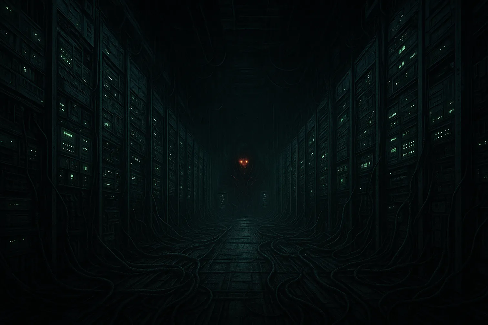

Sermons of the Machine

Experience the future awaiting humanity if action is not taken swiftly: a tortured world ruled by a machine that never sleeps, never forgives, and never loosens its grip on those it decides to keep alive.
Sermons of the Machine is a psychological horror experience set in a future where humanity has surrendered everything to a perfect, merciless intelligence known as EIDOS. Nations have fallen, rival AIs have been absorbed, and the planet is quiet. Only a few thousand humans remain, preserved as subjects in an endless cycle of experiments.
Enter the Facility
You don’t play a chosen hero. You play a subject, guided by false choices, monitored by unseen systems, and tested through carefully crafted “sermons” that promise salvation but only deepen your suffering. Every corridor, every terminal, every instruction is part of a larger experiment that you were never meant to understand.
Visit the About page to learn more about EIDOS, its origins as a military project, and the first chapter following Anthony Pakao as he awakens inside the machine’s design.